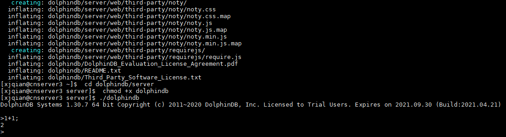
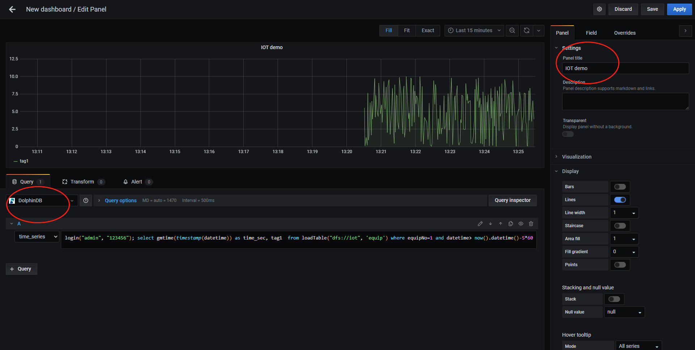
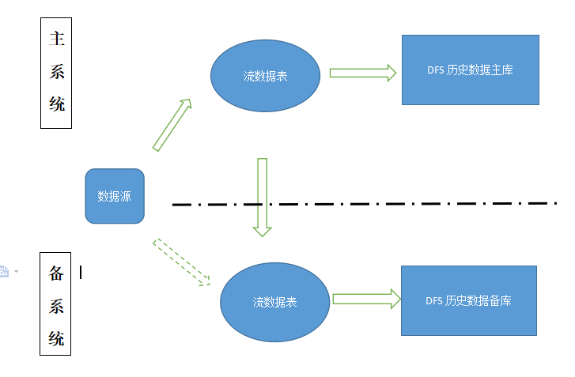

物联网应用范例
本教程介绍物联网领域 DolphinDB 用户在安装部署、分布式数据库设计、数据写入和查询、流计算和高可用测试等过程中的常见问题、相应的解决方案与注意事项，以帮助新用户快速入门。
1. 快速体验
1.1. 安装部署单节点服务
入门用户可先部署一个单节点模式 DolphinDB 以快速体验。单节点模式拥有与集群模式相同的功能，区别在于单节点模式不支持扩展节点和高可用，而集群模式可以方便地扩展到多个服务器节点以及支持高可用。安装的第一步是在官网下载DolphinDB 社区试用版。
选择 Windows 版本还是 Linux 版本？Linux 服务器比 Windows 服务器更稳定，建议生产环境选用 Linux 版本。若您现有环境是 Windows，亦可选择 Windows 版本进行体验。
选择稳定版还是最新版？目前一般 1-2 周会发布一个最新版。新版本不仅包含 bug 修复，还可能包含新功能、改进、性能优化等其他内容的更新，可能会带来新的 bug。若用于生产环境，出于对稳定性的要求，请选择稳定版。稳定版只修复 bug，不增加新功能。若进行体验与测试，可选择最新版。
若选择了最新版，选择JIT（即时编译）版本还是非 JIT 版本？DolphinDB 的即时编译功能显著提高了 for 循环，while 循环和 if-else 等语句的运行速度，特别适合于无法使用向量化运算但又对运行速度有极高要求的场景。但另一方面，DolphinDB 的 JIT 版本使用一个动态库，安装包要增加 10 多兆字节，这对原本仅 20 来兆的安装包相当可观。所以请综合考虑是否需要即时编译功能以及是否对安装包大小敏感，以决定是否下载 JIT 版本。
下载后，请参照单节点部署教程部署 DolphinDB。以 Linux 系统为例，步骤如下：
wget https://www.dolphindb.com/downloads/DolphinDB_Linux64_V1.30.7.zip
unzip DolphinDB_Linux64_V1.30.7.zip -d dolphindb
cd dolphindb/server
chmod +x dolphindb
./dolphindb安装路径名不要含有空格或中文字符，否则会提示异常：Cannot open configuration file。
安装过程若出现错误提示：Failed to bind the socket on port 8848，说明 8848 端口已被其他程序占用，请更换端口。假设修改端口为 8900，可在配置文件 dolphindb.cfg 中进行如下修改：
localSite=localhost:8900:local8900启动后出现如下界面。然后在 Console 中输入1+1;，若输出 2，即安装成功。

注意：
- 上述命令中 DolphinDB_Linux64_V1.30.7.zip 表明下载的是 1.30.7 版本，若是其他版本，请修改文件名中的版本号。
- 上述命令中采用前台运行的方式，若要后台运行，修改
./dolphindb命令为nohup ./dolphindb -console 0 &或sh startSingle.sh，然后用命令ps aux | grep dolphindb查看 dolphindb 进程是否已启动。若启动失败，请打开安装目录下的日志文件 dolphindb.log，查看日志中的错误提示信息。 - 数据文件默认存放在
<DolphinDB安装包>/server/local8848/storage/CHUNKS。请选择容量较大的磁盘存放数据文件，并通过参数 volumes 配置数据文件存放目录。 - DolphinDB 通过参数 maxMemSize 设置节点的最大内存使用量，默认设置为 0，表示内存使用没有限制。内存对于改进节点的计算性能非常明显，尽可能高配，但也不能设置太大。例如一台机器内存为 16GB，并且只部署 1 个节点，建议将该参数设置为 12GB 左右。否则使用内存接近或超过实际物理内存，有可能会触发操作系统强制关闭进程。如果在数据库使用过程中发生奔溃，可以用
dmesg -T | grep dolphindb查看一下 Linux 日志，确认一下是否被操作系统 kill。 - 修改配置后，需要重启 DolphinDB 服务。前台用
quit命令退出，后台用kill -9 <进程号>退出。
1.2. 测试 GUI 和 Web 连接
1.2.1. GUI 连接
DolphinDB 提供了多种方式与数据库交互，如 GUI、VSCode 插件、Web Notebook、Jupyter Notebook、命令行等。对入门用户，建议使用 DolphinDB GUI 编写 DolphinDB 脚本。请到 DolphinDB 官网下载DolphinDB GUI。安装前，需要确保已经安装 Java 8 及以上 64bit 版本。DolphinDB GUI 无需安装，开箱即用。在 Windows 环境下，双击 gui.bat 即可。在 Linu 和 Mac 环境下，在 Terminal 中输入：
cd /your/gui/folder
chmod +x gui.sh
./gui.sh若 GUI 无法启动，请在 GUI 安装目录下运行：
java -version若系统不能显示 Java 版本信息，说明 Java 没有安装或 Java 的安装路径不在系统路径中。在 Windows 上，需要查看是否在Path中；在 Linux 上，需要查看是否在PATH中。
若命令显示了 Java 版本信息，请检查版本是否符合要求。DolphinDB GUI 使用环境需要 64 位 Java 8 及以上版本。32 位的 Java 由于只支持 Client 模式，不支持 Server 模式，所以无法启动 GUI。符合要求的 Java 版本示例如下：
java version "1.8.0_121"
Java(TM) SE Runtime Environment (build 1.8.0_121-b13)
Java HotSpot(TM) 64-Bit Server VM (build 25.121-b13, mixed mode)如果版本信息的最后一行如下所示，那么 DolphinDB GUI 将无法正常启动，需要到Oracle 官网重新下载安装。
Java HotSpot(TM) Client VMGUI 启动后，首先根据提示，选择一个文件夹作为工作区。然后请参照GUI 帮助手册的说明，连接 DolphinDB 服务器，新建项目和脚本文件，再运行脚本。执行脚本时若出现错误提示：Failed to connect to selected server，请检查：
DolphinDB 端口是否被防火墙屏蔽。若端口没有开放，需要在防火墙打开该端口。
DolphinDB server 的 license 是否过期。
中文出现乱码
请在菜单栏点击 File-Preferences，在 Font 中设置中文字体，例如微软雅黑 (Microsoft Yahei)。然后执行 print(变量名)，查看输出结果，乱码是否消失。
- 浮点数精度丢失
DolphinDB GUI 默认精度是 4 位，如果需要更高或低的精度，请在菜单栏点击 File-Preferences, 在 Default number of decimal places 中调整精度，例如设置为 8。
执行脚本提示：java.lang.OutOfMemoryError: Java heap space
这意味着发生 GUI 内存溢出，说明 GUI 的默认 2048MB 启动内存不能满足需要。这种情况一般是由于执行了结果的数据量较大的 SQL 查询且未将查询结果赋值予一个变量（例如直接执行 select ... from ...)，因为此种操作会将结果的全部数据返回 GUI，占用 GUI 的内存。要避免此种情况下的 GUI 内存溢出，只需将结果赋值于一个变量，例如 t = select ... from ... 即可。此类语句在 server 端执行，不占用 GUI 内存。
假设需将 GUI 的内存扩大至 4096MB，可修改 gui/gui.bat 或者 gui/gui.sh 中的 -Xmx 启动参数，如下：
start javaw -classpath dolphindb.jar;dolphingui.jar;jfreechart-1.0.1.jar;jcommon-1.0.0.jar;jxl-2.6.12.jar;rsyntaxarea.jar;autocomplete.jar -Dlook=cross -Xmx4096m com.xxdb.gui.XXDBMain关于 DolphinDB GUI 的更多细节，请参阅DolphinDB GUI 客户端。
1.2.2. Web 连接
Web 客户端是 DolphinDB 安装包自带的、基于网页的图形化交互工具，主要用于系统监控、日志查看、以及数据浏览，也可用于快速编辑执行代码、查看变量、以及基本的画图功能。与 GUI 不同，Web 客户端更适合临时任务，不适于执行复杂的开发任务。为了保证 DolphinDB 服务器的性能，若 10 分钟内无命令执行，系统会自动关闭会话以释放 DolphinDB 系统资源。在单节点模式下，启动 DolphinDB 服务器后，只要在浏览器输入网址 (http://IP:PORT，默认为 http://localhost:8848 ) 即可访问。若无法访问，请检查：
- DolphinDB 端口是否被防火墙屏蔽。若端口没有开放，需要在防火墙打开该端口。
- DolphinDB server 的 license 是否过期。
- http 是否写成了 https。若需要使用 https 协议访问 web，请按照权限管理和安全第 3 节"使用 HTTPS 实现安全通信"进行配置。
DolphinDB 不会强制用户登录服务器，但是有些功能例如浏览/创建数据库或分区表需要登录才能访问。如果需要将权限设置为用户登录后才能执行脚本，单节点模式下可在配置文件 dolphindb.cfg 中添加配置项：
webLoginRequired=true;若用户成功登录，会在屏幕上方显示登录用户名。如果 10 分钟内无命令执行，会自动退出登录。
有关如何使用 Web 客户端的更多信息，请参阅 DolphinDB Web 客户端。
1.3. 使用脚本建库建表
DolphinDB 采用数据分区技术，按照用户指定的规则将大规模数据集水平分区，每个分区内的数据采用列式存储。在数据存储时，一个分区是一个目录。以按天分区为例，一天的数据存于同一个目录下。借助数据分区，在后续的查询过程中可直接跳过不必要的数据目录，从而提升查询性能。合理地利用分区，还可以实现数据的更新与删除操作，譬如数据表按天分区，那么数据就可以按天的粒度被更新或删除。
DolphinDB 的每个分布式数据库采用一种分区机制，一个数据库内的多个事实表（fact table）共享这种分区机制，而且同一个分区的多个子表（tablet chunk）数据落在同一个节点上，保证同一个数据库的多个事实表连接 (join) 的效率非常高。除了分布式的事实表，DolphinDB 还提供了不分区的维度表（dimension table），通常用于存储不经常更新的小数据集。这类数据的数据量通常不会随着时间的积累而增长，而且数据内容变化较小。维度表可与任何采用分区机制的事实表关联。
在 DolphinDB 中，数据库使用database函数创建，分区表和维度表分别使用createPartitionedTable和createTable函数创建。
DolphinDB 不提供行级的索引，而是将分区作为数据库的物理索引。一个分区字段相当于数据表的一个物理索引。如果查询时用到了该分区字段做数据过滤，SQL 引擎就能快速定位需要的数据块，而无需对整表进行扫描。为提高查询和计算性能，每个分区的数据量不宜过大、也不宜过小，一般建议每个分区压缩前的数据量控制在 100MB 左右（第 2 章会详细介绍，亦可参阅分区数据库教程）。
下例中假设有 1000 台设备，每台设备有 50 个指标，每个指标的数据类型都是 float，每秒采集一次数据。假设常用的查询基于时间段和设备进行，因此按时间和设备标识这 2 个维度进行分区。每台设备每天产生的数据约 16MB，因此数据库可按 2 个维度分区，第一个维度按天（datetime 列）值分区，第二个维度按设备编号（machineId 列）范围分区，10 个设备一个区，每个分区数据量约 160MB。建库建表代码如下：
db1 = database("",VALUE,2020.10.01..2020.12.30)
db2 = database("",RANGE,0..100*10+1)
db = database("dfs://iot",COMPO,[db1,db2])
m = "tag" + string(1..50)
schema = table(1:0, `machineId`datetime join m, [INT,DATETIME] join take(FLOAT,50) )
db.createPartitionedTable(schema,"machines",`datetime`machineId)上述代码新建分布式数据库 dfs://iot 与该库中的分布式数据表 machines。代码中，schema 是一个内存表，作为分区表的模板，指定了分区表的结构，包括设备编号列 machineNo、时间列 datetime 以及 50 个指标列 tag1~tag50，以及相应的数据类型。schema 表的第一个参数 1:0 分别为 capacity:size，其中 capacity 表示建表时系统为该表分配的内存（以行数为单位），size 表示该表新建时的行数。size=0 表示创建一个空表，仅仅作为分区表的模板使用。上述 schema 因为列名有规律、类型一致，所以用函数join进行了简化，实际等价于下面 2 种写法，可根据列名、类型情况进行仿写：
schema = table(1:0, `machineId`datetime`tag1`tag2`tag3`tag4`tag5`tag6`tag7`tag8`tag9`tag10`tag11`tag12`tag13`tag14`tag15`tag16`tag17`tag18`tag19`tag20`tag21`tag22`tag23`tag24`tag25`tag26`tag27`tag28`tag29`tag30`tag31`tag32`tag33`tag34`tag35`tag36`tag37`tag38`tag39`tag40`tag41`tag42`tag43`tag44`tag45`tag46`tag47`tag48`tag49`tag50,
[INT,DATETIME,FLOAT,FLOAT,FLOAT,FLOAT,FLOAT,FLOAT,FLOAT,FLOAT,FLOAT,FLOAT,FLOAT,FLOAT,FLOAT,FLOAT,FLOAT,FLOAT,FLOAT,FLOAT,FLOAT,FLOAT,FLOAT,FLOAT,FLOAT,FLOAT,FLOAT,FLOAT,FLOAT,FLOAT,FLOAT,FLOAT,FLOAT,FLOAT,FLOAT,FLOAT,FLOAT,FLOAT,FLOAT,FLOAT,FLOAT,FLOAT,FLOAT,FLOAT,FLOAT,FLOAT,FLOAT,FLOAT,FLOAT,FLOAT,FLOAT,FLOAT] )
schema=table(
array(INT,0) as machineId,
array(DATETIME,0) as datetime,
array(FLOAT,0) as tag1,
array(FLOAT,0) as tag2,
array(FLOAT,0) as tag3,
array(FLOAT,0) as tag4,
array(FLOAT,0) as tag5,
array(FLOAT,0) as tag6,
array(FLOAT,0) as tag7,
array(FLOAT,0) as tag8,
array(FLOAT,0) as tag9,
array(FLOAT,0) as tag10,
array(FLOAT,0) as tag11,
array(FLOAT,0) as tag12,
array(FLOAT,0) as tag13,
array(FLOAT,0) as tag14,
array(FLOAT,0) as tag15,
array(FLOAT,0) as tag16,
array(FLOAT,0) as tag17,
array(FLOAT,0) as tag18,
array(FLOAT,0) as tag19,
array(FLOAT,0) as tag20,
array(FLOAT,0) as tag21,
array(FLOAT,0) as tag22,
array(FLOAT,0) as tag23,
array(FLOAT,0) as tag24,
array(FLOAT,0) as tag25,
array(FLOAT,0) as tag26,
array(FLOAT,0) as tag27,
array(FLOAT,0) as tag28,
array(FLOAT,0) as tag29,
array(FLOAT,0) as tag30,
array(FLOAT,0) as tag31,
array(FLOAT,0) as tag32,
array(FLOAT,0) as tag33,
array(FLOAT,0) as tag34,
array(FLOAT,0) as tag35,
array(FLOAT,0) as tag36,
array(FLOAT,0) as tag37,
array(FLOAT,0) as tag38,
array(FLOAT,0) as tag39,
array(FLOAT,0) as tag40,
array(FLOAT,0) as tag41,
array(FLOAT,0) as tag42,
array(FLOAT,0) as tag43,
array(FLOAT,0) as tag44,
array(FLOAT,0) as tag45,
array(FLOAT,0) as tag46,
array(FLOAT,0) as tag47,
array(FLOAT,0) as tag48,
array(FLOAT,0) as tag49,
array(FLOAT,0) as tag50
)注意：
- 创建或访问分布式数据库和表需要相应的用户权限。若不登录，会出现类似"<NotAuthenticated>Not granted to ..."这样的错误提示。DolphinDB 的默认管理员用户是"admin"，其默认密码是"123456"。登录命令如下：
login(`admin, `123456)登录后使用函数changePwd修改密码。更多权限管理细节，请参阅权限管理和安全。
- 库表创建后，可使用函数
getAllDBs()显示当前所有数据库，使用函数schema显示某个表或某个数据库的结构信息。例如查询上述dfs://iot数据库的设备分区信息可用如下代码：
database("dfs://iot").schema().partitionSchema[1]查询上述 machines 的表结构可用如下代码：
loadTable("dfs://iot","machines").schema().colDefs- 数据库创建后，无法通过database函数修改分区类型或分区方案，若要修改，请先删库再重新创建。删除数据库可使用dropDatabase函数。若删除某个数据表，可使用dropTable。分布式表支持增加列，不支持修改列和删除列。增加列可使用addColumn函数。
1.4. 数据库增删改查
分布式表 (DFS table) 不支持使用insert into插入数据，仅支持使用append!或tableInsert函数插入数据。即使只插入一条数据，也要用表的形式来表示新增的数据。插入数据的代码示例如下，其中自定义函数genData输入设备编号集，开始时间和每台设备记录数，返回一个包含所有模拟记录的内存表。
下面首先为 1000 个设备产生 1 小时的数据，然后举例说明如何查询、修改和删除数据库记录：
def genData(uniqueMachineId, startDateTime, freqPerMachine){
numMachines = size(uniqueMachineId)
numRecords = numMachines * freqPerMachine
machineId = array(INT, numRecords)
for(i in 0:numMachines) machineId[(i*freqPerMachine) : ((i+1)*freqPerMachine)] = uniqueMachineId[i]
t = table(machineId, take(startDateTime + (0..(freqPerMachine-1)), numRecords) as ts)
m = "tag" + string(1..50)
for (i in 0 : 50) t[m[i]] =rand(10.0, numRecords)
return t
}
machines = loadTable("dfs://iot", "machines")
t=genData(1..1000, datetime(2020.10.05), 3600)
machines.append!(t)与其他关系数据库、NoSQL、NewSQL 等数据库不同，DolphinDB 将数据库、编程语言和分布式计算三者融为一体，这种设计使得 DolphinDB 可以一站式轻量化的解决海量大数据的存储与计算。但也使得数据库和表在 DolphinDB 中只是一个普通变量，引用数据库和表时，有可能会与脚本中的其他变量名发生冲突，所以不能直接使用数据库或表名，必须使用loadTable函数先加载数据表。上例中，加载数据库 dfs://iot 中的数据表 machines，并把这个表对象赋值给变量 machines，之后就可以使用变量 machines 来访问这个数据表。
例 1. 查询每个设备的记录总数：
select count(*) from machines group by machineId若查询到的记录数是 0，请检查一下写入数据的分区字段值是否超出了分区范围。比如这个数据库日期分区是 2020.10.01 到 2020.12.30，若数据的时间是在 2020.10.01 之前或 2020.12.30 之后，就会写入失败。为了解决这个问题，请参照用户手册中增加分区这小节的说明，在配置文件中增加配置项 newValuePartitionPolicy=add 并重启 DolphinDB 节点。
例 2. 查询设备 1 在 2020.10.05 这一天的历史记录：
select * from machines where machineId=1 and datetime between 2020.10.05T00:00:00 : 2020.10.05T23:59:59查询时需要注意：系统在执行分布式查询时，首先根据 where 条件确定相关分区。大多数分布式查询只涉及分布式表的部分分区，系统不必全表扫描，从而节省大量时间。但若不能根据 where 条件做分区剪枝，就会全表扫描，影响查询性能。另外，还可能出现类似下列错误：
The number of partitions [372912] relevant to the query is too large. Please add more specific filtering conditions on partition columns in WHERE clause, or consider changing the value of the configuration parameter maxPartitionNumPerQuery.配置参数 maxPartitionNumPerQuery 指定一个查询最多可以涉及的分区数量，默认值是 65535，用于防止生产环境中有人手误提交超级大的 query，影响性能。请注意，若 where 子句中的过滤条件不符合分区剪枝的规则，即使计算只使用了少数分区，在确定相关分区的过程中仍可能进行全表扫描，导致涉及的分区数量多于 maxPartitionNumPerQuery 的值。例如，若例 2 中的涉及日期的 where 条件写为 date(datetime)=2020.10.05，即使计算实质使用的分区数量不变，但由于违反了分区剪枝的规则，会全表扫描，耗时会显著增加。
可以使用以下方法解决这个问题：
- 查询中限定尽可能精确的分区范围。
- 定义数据库的分区机制时，时间戳列的定义不要包含将来的日期，可以在系统中将 newValuePartitionPolicy 设置成 add。这样新的日期出现时，系统会自动更新数据库定义。
- 将 maxPartitionNumPerQuery 的值调大。不推荐这种方法，因为若不小心忘记设定查询的过滤条件或将过滤条件设置过松，则该查询会耗时过久，浪费系统资源。
例 3. 查询设备 1 在 2020.10.05 这一天的最早的 10 条历史记录：
select top 10 * from machines where machineId=1 and datetime between 2020.10.05T00:00:00 : 2020.10.05T23:59:59DolphinDB 的分区之间存在先后顺序；分区内的数据按照写入顺序存储。查询或计算的时候，如果需要，可以用 order by、csort 等排序。下面我们选择不同分区的 1 号设备和 11 号设备，先写入 2020.10.06T00:00:01 各一条记录，然后写入 2020.10.06T00:00:00 各一条记录。再查询 top 2 记录：
t=genData([1,11],2020.10.06T00:00:01,1)
machines.append!(t)
t=genData([1,11],2020.10.06T00:00:00,1)
machines.append!(t)
select top 2 * from machines where datetime >= 2020.10.06T00:00:00查询结果如下所示。从中可见，虽然 11 号设备的 2020.10.06T00:00:01 的数据先写入，但因为它属于符合 where 条件（即 2020.10.06 日）第二个分区（每 10 台机器一个分区），所以结果中没有它，而是返回了第一个分区 1 号设备 2020.10.06T00:00:00 的数据。在第一个分区里，虽然 2020.10.06T00:00:00 的时间早，但它写入晚，所以先返回了 2020.10.06T00:00:01 的数据。如果查询 top 1，则只有 2020.10.06T00:00:01 的数据被返回。
machineId datetime tag1 ... tag50
1 2020.10.06T00:00:01 1.7039 ... 7.8002
1 2020.10.06T00:00:00 7.9393 ... 2.7662
例 4. 查询每个设备的最新一条记录：
select top 1 * from machines context by machineId csort datetime desc 此查询通过 SQL 的context by子句对表内记录进行分组，然后在组内按时间戳列进行 csort 降序排序，再与 top 一起使用，获取每个分组中的最新记录。
SQL 的context by子句为 DolphinDB 对标准 SQL 进行的拓展，在处理面板数据 (panel data) 时极为方便。更多细节请参考用户手册的context by的介绍。
若在生产环境中不断写入的情况下进行查询，为了减少查询范围，可增加一个查询条件，即限制 datetime 为最近一小时，如下所示：
select top 1 * from machines where datetime >= datetimeAdd(now().datetime(),-1,`h) context by machineId csort datetime desc 若数据是按时间顺序插入，系统内存资源充足，此查询也可使用快照引擎实现。快照引擎性能更佳，但目前仅支持单节点服务模式。
另外，在测试查询性能时，DolphinDB 提供了timer函数用于计算查询耗费的时间。譬如在 GUI 中查询 21 号设备在 2020.10.05 的记录：
timer select * from machines where machineId=21, datetime between 2020.10.05T00:00:00 : 2020.10.05T23:59:59返回如下信息：
2020.10.28 19:34:34.181: executing code (line 2489)...
Time elapsed: 9.52 ms
2020.10.28 19:34:34.227: execution was completed [46ms]这里打印了 2 个时间。第一个时间 9.52 ms 是timer返回的时间，为这个查询在服务器上运行耗费的时间；第二个时间 46 ms 则是从脚本命令发送到接收返回结果的整个过程花费的时间，两者之差为序列化/反序列化和网络传输的耗时。类似 select * from table 即返回整个数据集到 GUI 这样的查询语句，若数据量特别大，序列化/反序列化和网络传输的耗时可能会远远超过在服务器上运行的耗时。
从 1.30.6 版本起，DolphinDB 支持使用 SQL update 和 delete 语句修改分布式表（包括维度表和分区表）。
例 5. 更新设备 1 在 2020.10.05T00:00:00 时间点 tag1 值为 1.0：
update machines set tag1 = 1.0 where machineId=1 and datetime=2020.10.05T00:00:00例 6. 删除设备 1 在 2020.10.05T00:00:01 时间点的记录：
delete from machines where machineId=1 and datetime=2020.10.05T00:00:011.5. Grafana 连接 DolphinDB
DolphinDB 提供了标准协议的 SQL 查询接口，与第三方分析可视化系统如 Grafana、Redash 和帆软等可轻松实现集成与对接。本节以 Grafana 为例，介绍 DolphinDB 与第三方可视化系统的连接与展示。
1.5.1. 安装配置
安装 Grafana 请参考Grafana 官网教程。安装后，若本机浏览器中可以打开 http://localhost:3000/ ，说明 Grafana 安装成功，否则请检查 3000 这个端口是否被防火墙屏蔽或被其他应用占用。
DolphinDB 为了支持使用 Grafana 来实时展示时序数据，提供了 Grafana 的 dolphindb-datasource 插件，并且实现了对 Grafana 的 HTTP 数据接口，可以通过类 SQL 的查询脚本将 DolphinDB 的数据表以直观的方式展示在 Grafana 的 Dashboard 上。插件的下载与安装请参阅插件教程。
1.5.2. 显示数据
在 GUI 中运行以下脚本模拟 1 号设备每一秒产生一条数据，其中 gen 为 1.4 节描述的自定义函数，使用submitJob函数把自定义的writeIOTData函数提交批处理作业：
def writeIoTData(){
login("admin", "123456")
machines = loadTable("dfs://iot", "machines")
for (i in 0:86400) {
t=genData(1, now().datetime(), 1)
machines.append!(t)
sleep(1000)
}
}
submitJob("jobId1","writeDataToMachine1",writeIoTData)在 Grafana 的 Home 界面点击"Create Dashboard"，然后点击"Add new panel"，在如下图所示界面的 Query options 中选择 DolphinDB 数据源后，数据源下方会出现一个用于输入脚本的文本输入框，输入以下查询语句以读取 1 号设备前 5 分钟的 tag1 数据：
login('admin', '123456'); select gmtime(timestamp(datetime)) as time_sec, tag1 from loadTable('dfs://iot', 'machines') where machineId=1 and datetime> now().datetime()-5*60在右上角设置定时刷新及数据时间段的长度，就可以看到实时的数据变化走势图。

上图若不能正常显示，请检查：
- 在 GUI 中运行函数
getRecentJobs，查看作业运行是否有错，若有错，返回结果中 errorMsg 会显示错误信息。取消作业用cancelJob。 - Grafana 默认返回 timer_series 格式，SQL 中返回的第一个字段必须是 timestamp 类型。
- DFS 数据库需要登录后才能访问，所以 select 语句前需要先登录。
- 检查查询语句中是否含有双引号，若有双引号，改其为单引号。
- 若上述方法还不能解决问题，建议用 Goole Chrome 浏览器运行 Grafana，然后按 F12 调试，可以查看一下网络交互信息是否提示了异常。
1.6. DolphinDB 与其他数据库异同点小结
物联网历史数据有可能达到几百 TB 甚至 PB 级别。传统的关系型数据库（如 Oracle，SQL Server，MySQL 等）受到行式存储和数据索引的限制，处理如此量级数据的性能非常低下，即使分库分表，效果也不理想。DolphinDB 采用了分区机制，可以轻松应对 PB 级别的海量数据。DolphinDB 通过数据分区而不是索引的方式来快速定位数据，适合海量数据的存储，检索和计算。在数据量不是非常大时，创建索引可以显著提高系统的性能，但在海量数据场景下，随着数据量的不断增加，索引会不断膨胀（需要占用的内存甚至可能超过了服务器的内存），反而导致系统性能下降。
DolphinDB 将分布式数据库、分布式计算和编程语言从底层进行一体化设计，这种设计使得 DolphinDB 可以一站式轻量化的解决海量大数据的存储与计算。但是，引用数据库和表时，因为可能会与脚本中的变量名发生冲突，所以不能直接使用数据库或表名，必须使用loadTable函数先加载数据表。
与关系型数据库不同，DolphinDB 分布式表不支持使用insert into插入数据，仅支持使用append!或tableInsert函数以表的形式插入数据。DolphinDB 支持事务，客户端每次写入都是一个事务但是用户层面不提供事务操作，不需要用户像关系数据库一样显式地开始事务、提交事务等。
相比其他时序数据库，DolphinDB 是一个非常轻量级的系统，用 GNU C++ 开发，核心程序仅 20 余兆字节，无任何依赖，开箱即用。DolphinDB 已适配国产的 X86、ARM、MIPS（龙芯）等 CPU，可以运行在 Linux 和 Windows 操作系统上。
2. 分布式数据库设计和测试
2.1. DolphinDB 存储引擎
DolphinDB 利用分布式文件系统实现数据库的存储和基本事务机制。数据库以分区（chunk）为单位进行管理。分区的元数据（元数据指"../tools/grafana.md"小，存储位置等）存储在控制节点，副本数据存储在各数据节点，统一由分布式文件系统进行管理。一个数据库的数据可能存储在多个服务器上，系统内部通过事务机制和二阶段提交协议保证数据的强一致性和完整性，对于外部用户来说，这些机制是完全透明的。每个分区副本的数据采用列式增量压缩存储。压缩算法采用了 LZ4 或 DELTA 算法，在实际生产环境中，磁盘数据的无损压缩比约 5:1，在有些重复较多、变动范围较小、写入批量大的场景，也能做到更高的压缩比。
一个数据库最多可以支持三个维度的分区，支持百万甚至千万级的分区数。为尽可能保证每个分区的大小平衡，DolphinDB 提供了值（VALUE）分区，范围（RANGE）分区，哈希（HASH）分区，列表（LIST）分区和复合（COMPO）分区等多种分区方式，用户可以灵活使用，合理规划分区。在查询时，加载数据的最小单位是一个分区的一个列。DolphinDB 不提供行级的索引，而是将分区作为数据库的物理索引。一个分区字段相当于数据表的一个物理索引。如果查询时用到了该分区字段做数据过滤，SQL 引擎就能快速定位需要的数据块，而无需对整表进行扫描。在物联网领域，查询分析大多基于某一个时间段、某个设备或某个指标进行，因此时间和设备/指标标识是物联网领域最常用的分区维度。
下面展示一个数据库的存储目录和文件，其中数据库按照两个维度分区，第一个维度按天（ts 列）进行值分区，第二个维度按照标签编号（tagid 列）范围分区，建库建表以及测试数据写入代码如下所示：
schema = table(1:0,`tagid`ts`data,[INT,TIMESTAMP,INT]);
db1 = database("",VALUE,2020.01.01..2020.01.02)
db2 = database("",RANGE,1 11 21 31)
db = database("dfs://demo",COMPO,[db1,db2])
db.createPartitionedTable(schema,"sensor",`ts`tagid)
t=table(1..30 as tagid,take(2020.01.01T00:00:00.000 2020.01.02T00:00:00.000,30) as time,rand(10,30) as data )
loadTable("dfs://demo","sensor").append!(t)写入测试数据后，存储目录和数据文件如下所示，
[root@188 CHUNKS]# tree ./demo/
./demo/
├── 20200101
│ ├── 1_11
│ │ └── sensor
│ │ ├── data.col
│ │ ├── tagid.col
│ │ └── ts.col
│ ├── 11_21
│ │ └── sensor
│ │ ├── data.col
│ │ ├── tagid.col
│ │ └── ts.col
│ └── 21_31
│ └── sensor
│ ├── data.col
│ ├── tagid.col
│ └── ts.col
├── 20200102
│ ├── 1_11
...
├── dolphindb.lock
├── domain
└── sensor.tbl
从中可以看到，一个分区维度对应一层子目录，譬如按天分区的子目录名是 20200101，20200102 等，按标签编号范围分区的子目录名是 1_11，11_21 等，表中每一列保存为一个后缀名为 col 的文件，如 data.col，tagid.col 等。
DolphinDB 对分布式数据库表的读写支持事务，保证多行写入数据（可以跨越多个分区，支持多个副本）的原子性和持久性。断电不影响写入的数据，也不破坏数据库的完整性。DolphinDB 采用多版本机制实现快照级别的隔离。当用户同时对数据库进行读写操作时，读和写的并发事务会相互隔离。在这种隔离机制下，数据的读操作和写操作互不阻塞，可以最大程度优化数据仓库读的性能。目前绝大部分的时序数据库不提供事务功能，因此有可能发生一致性和完整性问题，譬如写入两条记录可能一条成功，另一条不成功；已经写入的数据在断电重启后可能丢失最后几条数据；查询的时候可能查到正在写入的数据（尚未全部完成)。
2.2. 单值模型
数据库通用的设计模式有两种，即单值模型和多值模型。单值模型针对测点建模。一个被监控的指标称为一个测点，例如电量仪中会有电压、电流、功率等测点，温湿度计中有温度、湿度测点。单值模型在写入时每一个测点为一行，所有采集的传感器指标值，无论种类，均存于同一列中。单值模型适合各测点采集频率不一致的应用场景，不适合不同指标之间要做很多协同处理的场景。单值模型数据占用的存储空间大，写入性能和查询性能也不如多值模型。
假设某厂有 100 个机组，每台机组有 50 个测点，共有 100*50=5000 个测点。每个测点采集一个指标的数据，每秒采集一次数据，均为 float 类型。所有机组采集相同的 50 个指标的数据并存入数据库。
对测点按顺序进行编号：一号机组的测点为 1~50，二号机组的测点是 51~100，以此类推。
本案例若按单值模型设计，表结构可定义如下：
| 列名 | 数据类型 | 备注 |
|---|---|---|
| id | INT | 测点编号 |
| datetime | DATETIME | 时间 |
| value | FLOAT | 指标值 |
单值模型适合的常用查询基于测点编号与时间段，可按测点编号和时间这 2 个维度进行分区。时间维度一般情况下可按天进行值（VALUE）分区，但也可根据数据量和典型查询场景采用其它分区方案。若某些场景下，查询时间跨度不是很长，而单位时间内的数据量又较大，也可以按小时进行分区。若数据量比较小，又常按一个月或几个月进行查询和计算，也可以按月分区。
物联网设备监控场景的各指标的采集频率一般固定，比较容易计算单位时间的数据量大小，因此指标维度的分区通常采用范围（RANGE）或值（VALUE）方法。DolphinDB 中组合分区的多个列在逻辑上是并列的，不存在从属关系或优先级关系。如果时间维度有 n 个分区，指标维度有 m 个分区，最多可能有 n * m 个分区。为提高查询和计算性能，每个分区的数据量不宜过大、也不宜过小。一般建议每个分区压缩前的数据量控制在 100MB 左右（详情请参阅分区数据库教程）。
本案例中，每 100 个测点（即两个机组）每天的数据约 100MB（12 字节/条*86400 条*100 测点）。所以第一个分区维度采用值分区，每天为一个分区；第二个分区维度采用范围（RANGE）分区，每 100 个测点（即两台机组）为一个分区。参考代码如下：
numMachines=100
numMetrics=50
numMachinesPerPartition=2
ps1=2020.09.01..2020.12.31
ps2=(numMetrics*numMachinesPerPartition)*(0..(numMachines/numMachinesPerPartition))+1
def createDatabase(dbName,tableName, ps1, ps2){
tableSchema = table(1:0,`id`datetime`value,[INT,DATETIME,FLOAT]);
db1 = database("", VALUE, ps1)
db2 = database("", RANGE, ps2)
db = database(dbName,COMPO,[db1,db2])
dfsTable = db.createPartitionedTable(tableSchema,tableName,`datetime`id)
}
createDatabase("dfs://svmDemo","sensors", ps1, ps2)以上建立的数据库 dfs://svmDemo 中的 svm 代表 single-value model（单值模型）。
2.3. 多值模型
多值模型通常针对数据源（在物联网领域通常是设备）建模，写入时每一个设备在同一时刻被测量的所有指标值为一行。上一小节中案例若用多值建模，表结构定义如下：
| 列名 | 数据类型 | 备注 |
|---|---|---|
| id | INT | 机组编号 |
| datetime | DATETIME | 时间 |
| TAG1 | FLOAT | 1 号指标 |
| ... | ||
| TAG50 | FLOAT | 50 号指标 |
多值模型适合的常用查询基于时间段和设备，因此多值模型的分区字段可选择时间和设备这 2 个维度。时间维度通常按天、按小时或按月进行值（VALUE）分区，由数据量和典型查询场景决定。若查询时间段跨度不大且单位时间内采集数据量大，可按小时进行分区；若查询时间段跨度大且单位时间内数据量不大，可按月分区。设备维度的分区可以采用哈希、范围、值、列表等多种方法，原则就是要根据业务特点对数据进行均匀分割，让每个分区压缩前的大小控制在 100MB 左右。但如果数据表为宽表（几百甚至几千个字段），若单个应用只会使用一小部分字段，因为未用到的字段不会加载到内存，不影响查询效率，这种情况可以适当放大分区上限的范围。数据库分区也可按三个维度进行。比如采集设备的网络日志，常用的查询基于时间段、源 IP 地址和目的 IP 地址，就可以考虑采用时间、源 IP 地址和目的 IP 地址三个分区维度。
本案例每机组每天的记录数为 86400 条，每天的数据量约 16MB。常用查询按天和设备进行，因此可采用复合分区，按天进行值分区，按机组进行范围分区，每 10 个机组为一个分区。参考代码如下：
numMachines=100
numMachinesPerPartition=10
ps1=2020.09.01..2020.12.31
ps2=numMachinesPerPartition*(0..(numMachines/numMachinesPerPartition))+1
def createDatabase(dbName,tableName, ps1, ps2, numMetrics){
m = "tag" + string(1..numMetrics)
schema = table(1:0,`id`datetime join m, [INT,DATETIME] join take(FLOAT,50) )
db1 = database("",VALUE,ps1)
db2 = database("",RANGE,ps2)
db = database(dbName,COMPO,[db1,db2])
db.createPartitionedTable(schema,tableName,`datetime`id)
}
createDatabase("dfs://mvmDemo","machines", ps1, ps2, 50)以上建立的数据库 dfs://mvmDemo 中的 mvm 代表 multiple-value model（多值模型）。
2.4. 使用脚本生成测试数据
若没有实际生产数据，可使用脚本模拟产生测试数据。
- 单值模型的脚本见附件 1
此脚本生成分布式表 dfs://svmDemo/sensors 多天的模拟数据。函数 generate1DayData 用于产生一天的模拟数据；函数 singleThreadWriting 调用 generate1DayData 产生模拟数据，并将数据用单线程写入分布式表中。singleThreadWriting 中每次写入操作写入一个分区的全部数据，这样每个分区的数据文件只需打开一次就全部写入，可提高写入性能。多线程并行写入能进一步提升写入性能。
函数 multipleThreadWriting 用cut函数把测点标号向量按线程数平均分隔，然后用ploop并行调用 singleThreadWriting 多线程写入数据库。
代码中线程数设为 20，实际写入时请根据主机内存情况调整。写入开始后，可以使用getRecentJobs函数查看作业处理情况，若返回结果中 endtime 等 endtime 全部显示出来了。使用getClusterPerf函数查看系统 CPU 与内存等资源使用情况。
若有 1000 台机器，50 个指标，写入 5 天，在普通台式机上约需 50-100 分钟左右写入，在 I/O 性能较好的服务器上约需 4 分钟写入。磁盘上数据文件约为 160GB。
- 多值模型的脚本见附件 2
这个脚本可以生成分布式表 dfs://mvmDemo/equip 多天的模拟数据，脚本逻辑与单值模型类似。
要提升写入性能，可采取以下措施：
- 批量写入每批次的数据量不宜过小，一般几十 MB 比较合适。
以上述单值模型案例为例，100 个测点共写入 90 天的数据，即 777,600,000 条记录，用不同批量大小在一台 PowerEdge R730xd linux 主机上测试。DolphinDB 采用单节点部署，限制使用 32G 内存，16 核 CPU。元数据写入 SSD，数据写入 HDD，其他都采用默认配置。测试结果如下：
| 每批记录数 | 写入耗时（秒） | 每秒写入记录数 |
|---|---|---|
| 100 | 8,086 | 96,166 |
| 6,000 | 165 | 471,272 |
| 360,000 | 38 | 20,463,157 |
每次写入数据涉及的分区数量不宜过多。DolphinDB 存储时，每个分区每个列存为一个文件。若每次写入 3 列数据，涉及 3,600 个分区，那么每次需要写入 3,600*3=10,800 个文件，会严重影响写入性能。例如在上述测试环境中，还是每批写入 360,000 条，并写入一样多的记录总数，但每批涉及分区 3,600 个，耗时 7,922 秒，是每次写入单个分区耗时的 200 余倍。
对小批量写入，启用 Redo Log 和写入数据缓存 (Cache Engine) 功能，能把多次少量的写入缓存起来，一次批量写入，能大大提高写入吞吐量。以上述 100 个测点共写入 777,600,000 条记录为例，在同样的测试环境，但设置了 dataSync=1（表示将 Redo log、数据和元数据强制刷盘）和 chunkCacheEngineMemSize=1（缓存为 1GB）。测试结果显示，每批写入 100 条记录，仅耗时 81 秒，吞吐量提高约 100 倍。有关 Redo Log 和 Cache Engine 的更多信息，请参阅Cache Engine 与数据库日志
使用多个客户端多线程并行写入，但注意多个 writer 不能同时向同一个分区写入。
下面用单值模型脚本在一台台式机上测试，台式机 CPU 为 6 核 12 线程的 Intel I7，内存 32GB，128GB SSD 和 2TB 7200RPM HDD。DolphinDB 采用单节点部署，限制使用 16G 内存，启动 Redo Log 和写入缓存。元数据和 Redo Log 写入 SSD，数据写入 HDD。1000 台设备，50 个指标，写入 5 天历史数据，如下表所示，5 个线程是单线程写入性能快约 1.5 倍，10 线程时受硬件资源限制，与 5 线程相比提升不明显。
| 线程数 | 写入耗时（秒） | 每秒写入记录数 |
|---|---|---|
| 1 | 4081 | 5,292,820 |
| 5 | 2925 | 7,384,615 |
| 10 | 2907 | 7,430,340 |
- 不同的数据节点配置不同的磁盘，每个数据节点挂载多卷（Volumes），可并行利用多个磁盘的 I/O 接口，大幅提升节点的整体读写吞吐性能。例如下面配置 diskIOConcurrencyLevel 为 4，volumes 配置 4 个磁盘，也即为每一个挂载的硬盘配置一个读写线程，将对一个磁盘的读写任务串行化到一个队列，避免了并发线程之间的磁盘读写竞争。
diskIOConcurrencyLevel=4
volumes=/hdd/hdd1/volumes,/hdd/hdd2/volumes,/hdd/hdd3/volumes,/hdd/hdd4/volumes3. 历史数据查询
本章节所用数据均为第 2 章中所建之单值模型 sensors 分布式表。请注意，由于 sensors 中 value 列的数据为随机生成，所以以下结果中涉及到 value 的数值会与您得到的结果有所差别。
首先将 sensors 表元数据载入内存：
login("admin","123456")
sensors=loadTable("dfs://svmDemo","sensors")3.1. 趋势查询
将一天内 10 个指定测点的数据，按每 2 分钟分成若干时间段，每个时间段内计算最大值、最小值、开始值与结束值。
select first(value), last(value), max(value), min(value)
from sensors
where id in [1,2,51,52,101,102,151,152,201,202] and datetime between 2020.09.01T00:00:00 : 2020.09.07T23:59:59
group by id, bar(datetime,120)3.2. 对比查询
查询某天内 1，2，3 号设备中的 1 号指标每分钟的平均值，将结果按分钟与设备编号排列，以便于对比。
DolphinDB 支持在 SQL 中使用pivot by子句将表中某列的内容按照两个维度重新排列，亦可配合数据转换函数使用。pivot by是 DolphinDB 对标准 SQL 语句的拓展。此查询的代码如下所示：
select avg(value) from sensors
where id in [1,51,101], datetime between 2020.09.01T00:00:00 : 2020.09.01T23:59:59
pivot by datetime.minute() as time, id结果如下：
time C1 C51 C101
00:00m 0.5375 0.4846 0.4858
00:01m 0.5422 0.5549 0.5073
00:02m 0.4576 0.5358 0.4846
...3.3. 分组查询 top N
查询指定 1 小时内 CPU 平均利用率最高的三台设备。假设 CPU 利用率为指标 1。这里使用嵌套查询，先分组计算平均值，然后根据平均值排序，再对结果使用 top 子句（或 limit 子句）。代码如下：
select top 3 id
from (
select avg(value) as avg
from sensors
where mod(id, 50)=1, datetime between 2020.09.01T00:00:00 : 2020.09.01T00:59:59
group by id order by avg desc
)以上脚本亦可写为：
select id
from (
select avg(value) as avg
from sensors
where mod(id, 50)=1, datetime between 2020.09.01T00:00:00 : 2020.09.01T00:59:59
group by id order by avg desc
) limit 3注意这里 id 查询条件用了 mod(id, 50)=1，查询时不能分区剪枝，是因为这个查询本身就需要扫描全部 id 的分区，若只在部分设备中查询，建议用 id in [1,51,...]的方式。
3.4. 关联查询
DolphinDB 支持如下 7 种关联查询：
- equal join (
ej) - left join (
lj) - cross join (
cj) - full join (
fj) - asof join (
aj) - window join (
wj) - prefix join (
pj)
例 1：分布式表 sensors 中只存储了测点编号，现提供这些测点的描述信息，在查询分析时需与这些信息进行关联查询和计算。
这些测点信息可以存储在维度表中。维度表是分布式数据库中没有分区的表，一般用于存储不频繁更新的小数据集。维度表可与任何分布式表，维度表以及内存表进行关联。DolphinDB 自动会在各个节点上缓存 (cache) 维度表，以提升查询和关联的性能。下面例子创建维度表 tagInfo 并插入一些样本数据：
db = database("dfs://svmDemo")
schema = table(1:0, `tagId`machineId`tagName`organization`description, [INT,INT,SYMBOL,SYMBOL,SYMBOL])
dt = db.createTable(schema,`tagInfo)
tagInfo=loadTable("dfs://svmDemo","tagInfo")
t = table(1 2 51 52 as tagId,1 1 2 2 as machineId,`speed`temperature`speed`temperature as tagName,`hangzhou`hangzhou`shanghai`shanghai as organization,
"Speed/No.1 Wind Turbine in Hangzhou" "Temperature/No.1 Wind Turbine in Hangzhou" "Speed/No.2 Wind Turbine in Shanghai" "Temperature/No.2 Wind Turbine in Shanghai" as description )
tagInfo.append!(t)sensors 与 tagInfo 进行 equal join 关联查询：
select tagId,datetime,value,machineId,tagName,organization from ej(sensors,tagInfo,`id,`tagid) where machineId in [1,2], datetime between 2020.09.01T00:00:00 : 2020.09.01T00:59:59 order by datetime结果如下：
| tagId | datetime | value | machineId | tagName | organization |
|---|---|---|---|---|---|
| 1 | 2020.09.01T00:00:00 | 95.4607 | 1 | speed | hangzhou |
| 2 | 2020.09.01T00:00:00 | 97.5109 | 1 | temperature | hangzhou |
| 51 | 2020.09.01T00:00:00 | 67.7972 | 2 | speed | shanghai |
| 52 | 2020.09.01T00:00:00 | 76.0762 | 2 | temperature | shanghai |
| 1 | 2020.09.01T00:00:01 | 49.3085 | 1 | speed | hangzhou |
| ... | |||||
例 2：根据温度异常指标记录表（t1）以及 sensors 表，寻找温度（3 号指标）异常发生时，同一机器的湿度（4 号指标）的最新值。
函数aj(asof join) 的常用场景是在时间字段上进行非同时连接，为左表中每条记录，在右表中获取符合指定条件的组中该时刻之前（包括该时刻）的最后一条记录。
在本例中，为了展示 asof join，我们将 sensors 中的数据进行了改动，假设温度异常发生之前，有一段时间内 sensors 表中不存在湿度的数据。
示例代码如下：
t1 = table(3 53 as id, 1 2 as machineId, 2020.09.01T09:56:06 2020.09.01T09:58:12 as datetime, 50.6 50.7 as anomalyMetrics)
t2_1 = select *, 1 as machineId from sensors where id=4, datetime between 2020.09.01T09:00:00 : 2020.09.01T09:54:00
t2_2 = select *, 2 as machineId from sensors where id=54, datetime between 2020.09.01T09:00:00 : 2020.09.01T09:57:00
t2 = unionAll(t2_1, t2_2)
select * from aj(t1, t2, `machineId`datetime);asof join 和 left join 的区别为：假设连接列是时间，对于左表中时间 t 对应的行，如果右表中没有与之匹配的记录，则取右表中在 t 之前的最近时间对应的行。
例 3：t1 是异常指标记录表，现需要了解异常指标发生时间之前 5 秒钟的原始数据中的指标平均值、最大和最小值。
此场景可使用函数wj(window join)，为左表中每条记录，在右表中获取符合指定条件的组基于该时刻的指定时间范围的记录并进行计算。示例代码如下：
t1 = table(1 51 as id, 2020.09.01T09:56:06 2020.09.01T09:56:07 as datetime, 50.6 50.7 as anomalyMetrics)
t2 = select * from sensors where id in [1,51], datetime between 2020.09.01T09:00:00 : 2020.09.01T09:59:59
wj(t1, t2, -5000:0, <[avg(value),max(value),min(value)]>, `id`datetime)例 4：现有一张告警表，记录了设备的当前告警信息。告警后，用户需要对告警进行确认和清除。查询时，需要显示告警信息以及告警状态。
告警表 Alarm 是分布式表，不支持单行更新。因此创建一张告警操作流水表 AlarmAction 记录告警确认和清除信息。每确认或清除一次，往操作流水表中添加一条记录。查询时将告警表和操作流水表通过lj关联。示例代码如下：
//创建告警表和告警操作流水表
alarm = table(1:0, `ID`deviceID`time`priority`desc, [UUID,SYMBOL, DATETIME, INT, STRING])
db1 = database(, VALUE, 2020.01.01..2020.12.31)
db2 = database(, HASH, [SYMBOL, 10])
db = database("dfs://demo", COMPO, [db1,db2])
db.createPartitionedTable(alarm, "alarm", `time`deviceID)
alarmAction = table(1:0, `ID`deviceID`time`action`actionTime`user`remark, [UUID,SYMBOL,DATETIME, SYMBOL, DATETIME, SYMBOL, STRING])
db = database("dfs://demo")
db.createPartitionedTable(alarmAction, "alarmAction", `time`deviceID)
//告警表中模拟写入3条记录
alarm = loadTable("dfs://demo","alarm")
action = loadTable("dfs://demo","alarmAction")
t = table([uuid("b9f36c85-43ce-45a3-8427-b3529a6c41cc"),uuid("baba6fe6-67b9-4c18-885a-3fd6edd3002e"),uuid("b510c959-4f9b-4eaf-81a7-ee7e420810c0")] as UUID,"BDSA11_PSCADA" "DMS01" "XKZDEPOT_CCTV_DI20" as deviceID,take(now().datetime(),3) as time,1..3 as priority,"CONN_FAIL" "OFFLINE" "ERROR" as descs)
alarm.append!(t)
//确认2条告警，写入告警操作流水表
arrUUID = uuid(["b9f36c85-43ce-45a3-8427-b3529a6c41cc","baba6fe6-67b9-4c18-885a-3fd6edd3002e"])
tmp = select ID,deviceId, time,"CONFIRM" as action, now().datetime() as actionTime, "admin" as actionUser, "test confirm" as remark from alarm where time > today().datetime(), ID in arrUUID
action.tableInsert(tmp)
//清除1条告警，写入告警操作流水表
tmp = select ID,deviceId, time,"CLEAR" as action, now().datetime() as actionTime, "admin" as actionUser, "test clear" as remark from alarm where time > today().datetime(), ID =uuid("b9f36c85-43ce-45a3-8427-b3529a6c41cc")
action.tableInsert(tmp)
//查询告警信息以及确认、清除信息
t1 = select ID,time, deviceID, actionTime,user as confirmUser, remark as confirmRemark from action where time > today().datetime(), action="CONFIRM"
t2 = select ID, actionTime, user as clearUser, remark as clearRemark from action where time > today().datetime(), action="CLEAR"
tmp = lsj(t1,t2,`ID)
select * from lj(alarm, tmp,`time`deviceId`ID,`time`deviceID`ID) where time > today().datetime()
查询结果如下：
| ID | deviceID | time | priority | desc | actionTime | confirmUser | confirmRemark | t2_actionTime | clearUser | clearRemark |
|---|---|---|---|---|---|---|---|---|---|---|
| b9f... | BDSA11_PSCADA | 2020.11.05T17:10:11 | 1 | CONN_FAIL | 2020.11.05T17:19:26 | admin | test confirm | 2020.11.05T17:30:53 | admin | test clear |
| bab... | DMS01 | 2020.11.05T17:10:11 | 2 | OFFLINE | 2020.11.05T17:19:26 | admin | test confirm | |||
| b51... | XKZDEPOT_CCTV_DI20 | 2020.11.05T17:10:11 | 3 | ERROR | ||||||
3.5. 降精度
DolphinDB 支持最高纳秒级精度的时间序列数据，可将高精度大数据集聚合转换成低精度小数据集。支持多种时间精度分组抽样：月（month）、天（date）、分钟 (minute)、秒 (second)，以及其他任意时间精度。
例 1：计算一天内指定测点每分钟的平均值。
select avg(value) as avg
from sensors
where id in [1,51,101,151,201], datetime between 2020.09.01T00:00:00 : 2020.09.01T23:59:59
group by id, minute(datetime)例 2：计算一天内指定测点每 30 秒的平均值。
select avg(value) as avg
from sensors
where id in [1,51,101,151,201], datetime between 2020.09.01T00:00:00 : 2020.09.07T23:59:59
group by id, bar(datetime,30)例 3：先对每个指定测点求每 10 秒的平均值，再对每测点的平均值结果求最小值。
select min(avg) as minAvg from(
select avg(value) as avg
from sensors
where id in [1,51,101,151,201], datetime between 2020.09.01T00:00:00 : 2020.09.01T00:59:59
group by id, bar(datetime,10)
) group by id3.6. 插值查询
在物联网领域经常会发生采集的数据缺失。对数据中的空值，DolphinDB 提供了interpolate用于插值查询，插值的方式支持：linear（线性插值），pad（使用已有的值填充），nearest（使用最接近 NULL 值的有效值填充）和 krogh（使用 krogh 多项式插值）。
DolphinDB 还提供了以下 4 个填充 NULL 值的函数：向前/向后取非空值（bfill/ffill），线性填充（lfill）和指定值填充（nullFill）。用户也可以通过脚本或 C++ 插件扩充新的插值函数。
例 1：使用 ffill 函数进行填充空值。在脚本中，首先制造一分钟的空值。
t = select * from sensors where id=1, datetime between 2020.09.01T00:00:00 : 2020.09.01T00:59:59
update t set value=NULL where datetime between 2020.09.01T00:08:00 : 2020.09.01T00:09:00
update t set value=value.ffill() 例 2：查询一段时间内每分钟的平均值，如果某一分钟内没有原始数据，需要插值。
DolphinDB 从 1.30.7 版本起在 group by 子句中引入了 dummy 函数interval(X, duration, fill)来实现插值功能，fill 的方式有 5 种，分别是：prev，缺失值使用前一个值填充；post，缺失值使用后一个值填充；linear，缺失值使用线性插值填充（注意如果列是非数值列，则无法使用线性插值填充，这种情况下会回退到使用 prev 的方式填充）；null，缺失值使用 null 值填充；numericValue，以一个指定的 numeric 值来填充。例子如下，插值的方式用了线性插值：
select avg(value) as value
from sensors
where id = 1 and date(datetime)=2020.09.01 group by id, interval(datetime, 1m, "linear")注意：1.30.7 前的版本，要用下面的方法实现，先生成时间戳表做为左表，然后用 lsj 连接：
timeRange = 2020.09.01T00:00:00+(0..1439)*60
t = table(timeRange as time,take(1,size(timeRange)) as id)
t1=select avg(value) as value
from sensors
where id = 1 and datetime between 2020.09.01T00:00:00 : 2020.09.01T23:59:59
group by id,bar(datetime,60) as time
delete from t1 where rowNo(id)%2=1 //为了查看插值效果，特意删去t1偶数行
select time,interpolate(value) as value ,t.id from lsj(t,t1,`time)3.7. 去重
若从设备采集的数据有重复，或者一个时间间隔内有多条记录，但查询时每个时间间隔只需要一条记录，这些场景就需要去除表中的重复记录。DolphinDB 的数据模型支持重复数据，在插入时也不检测重复数据。若要去除分布式表中的重复记录，可以使用 context by 子句去重。
context by 是 DolphinDB 独有的功能，是对标准 SQL 语句的拓展。context by 与 group by 类似，都对数据进行分组，但是使用 group by 时，每一组返回一个标量值，而使用 context by 时，每一组返回一个和组内元素数量相同的向量。context by 与 limit 一起使用能够获取表中每个分组前 n 条记录或最后 n 条记录。用 context by 去重的例子如下：
select * from sensors where id in [1,51,101,151,201], datetime between 2020.09.01T00:00:00 : 2020.09.03T23:59:59 context by id, datetime limit -1上述代码 limit 后面为负数，表示取每个分组的最后一条记录。
3.8. 函数视图
函数视图是封装了访问数据库以及相关计算语句的自定义函数。它类似关系数据库中的存储过程，可以封装复杂的业务逻辑，方便用户调用。与其他自定义函数会话隔离不同，函数视图可以实现会话之间的共享。函数视图的定义持久化存储在控制节点，因此如果 DolphinDB 集群重启，之前定义的函数视图仍然可以使用。
下面例子使用addFunctionView函数定义了一个函数视图 task1。其中先用 pivot by 对指定设备的第 1-6 个指标按分钟分组按列转置，然后对转置后的表进行列名修改，再对每列分别进行计算。
def task1(MachineId){
t=select avg(value) from loadTable("dfs://svmDemo","sensors")
where id in 1..6 + (MachineId-1)*50, datetime >datetimeAdd(now(),-1,`h).datetime()
pivot by datetime.minute() as time, id
t.rename!(`time`tag1`tag2`tag3`tag4`tag5`tag6)
return select time, log(tag1) as target1, sqrt(tag2) as target2, tan(tag3) as target3, sin(tag4) as target4, floor(tag5) as target5, abs(tag6) as target6 from t
}
addFunctionView(task1) 3.9. API 查询数据
DolphinDB 提供 Python, C++, Java, C#, Go, JavaScript, Rust 等常用语言的 API 用于读写数据库。通常数据查询的流程如下：
- 建立一个连接并登录
- 通过 run("DolphinDBScript") 运行查询语句查询或 run("DolphinDBFunctionName",args) 运行函数或函数视图查询。
使用 Python API 从分布式表中读取数据的例子如下。其中第一个 run 是运行查询语句，第二个 run 是运行上一小节定义的函数视图：
import dolphindb as ddb import pandas as pd s = ddb.session() try: s.connect("127.0.0.1",8848,"admin","123456") except Exception as e: print e exit(1) script=""" select * from loadTable('dfs://svmDemo','sensors') where id=1, datetime between 2020.09.01T00:00:00 : 2020.09.03T23:59:59 """ try: t = s.run(script) print(t) t = s.run("task1",1) print(t) except Exception as e: print e
注意：
- run 方法可接受的脚本最大长度为 65,535 字节。
- 脚本如果是多行，可以采用三引号的方式将脚本格式化，这样更易于维护。
- 在 run 前，不需要判断连接是否正常，直接 run 即可。系统会判断有没有连接，若没有，就会自动尝试重连，连不上或执行脚本失败，会抛出异常，因此代码中需要俘获异常并进行处理。
使用 Java API 从分布式表中读取数据的例子如下：
在 Java API 中，数据表保存为 BasicTable 对象。由于 BasicTable 是列式存储，所以若要在 Java API 中读取行数据需要先取出需要的列，再取出行。
public void getBasicTable(BasicTable table1) throws Exception{
BasicIntVector idVec = (BasicIntVector) table1.getColumn("id");
BasicDateTimeVector timeVec = (BasicDateTimeVector) table1.getColumn("time");
BasicFloatVector valueVec = (BasicFloatVector) table1.getColumn("value");
for(int ri=0; ri<table1.rows(); ri++){
System.out.println(idVec.getInt(ri));
LocalDateTime timestamp = timeVec.getDatetime(ri);
System.out.println(timestamp);
System.out.println(valueVec.getDouble(ri));
}
}
DBConnection conn = new DBConnection();
try {
conn.connect(SERVER, PORT, USER, PASSWORD);
BasicTable table1=conn.run(String.format("select * from loadTable('%s','%s') where id=1, datetime between 2020.09.01T00:00:00 : 2020.09.07T23:59:59",dbPath,tableName);
getBasicTable(table1) ;
} catch (IOException e) {
e.printStackTrace();
}对于返回大结果集的查询，JAVA API 提供了分段读取方法 (此方法仅适用于 DolphinDB 1.20.5 及其以上版本)。即在 run 方法中使用参数 fetchSize 指定分段大小，查询结果保存到 EntityBlockReader 对象，然后通过 read() 方法一段段的读取数据。代码示例如下：
DBConnection conn = new DBConnection(); conn.connect(SERVER, PORT, USER, PASSWORD); EntityBlockReader v = (EntityBlockReader)conn.run("select * from loadTable('dfs://svmDemo','sensors') where datetime between 2020.09.01T00:00:00 : 2020.09.07T23:59:59",(ProgressListener) null,4,4,10000); BasicTable data = (BasicTable)v.read(); while(v.hasNext()){ BasicTable t = (BasicTable)v.read(); data = data.combine(t); }
在使用上述分段读取的方法时，若数据未读取完毕，需要放弃后续数据的读取时，必须调用 skipAll 方法，否则会导致套接字缓冲区滞留数据，引发后续数据的反序列化失败。正确使用的示例代码如下：
EntityBlockReader v = (EntityBlockReader)conn.run("select * from loadTable('dfs://svmDemo','sensors') where datetime between 2020.09.01T00:00:00 : 2020.09.07T23:59:59",(ProgressListener) null,4,4,10000); BasicTable data = (BasicTable)v.read(); v.skipAll(); BasicTable t1 = (BasicTable)conn.run("select * from loadTable('dfs://svmDemo','sensors') where datetime between 2020.09.01T00:00:00 : 2020.09.03T23:59:59"); //若没有 skipAll 此段会抛出异常。
在 DolphinDB 中，分页查询还可以通过 top 关键字实现，比如查询第 50 到 100 行：
select top 50:100 * from sensors where datetime between 2020.09.01T00:00:00 : 2020.09.03T23:59:59但这种方法每获取一页都要重新查询一次，效率较低。
有关 API 查询数据更详细的信息，请参阅 Python API 与 JAVA API 等教程。
4. 生产数据写入
DolphinDB 提供 Python, C++, Java, C#, Go, JavaScript, Rust 等常用语言的 API，将从设备采集的数据写入到 DolphinDB 数据库中。DolphinDB 中内存表可以像传统数据库那样利用循环调用 insert into 语句写入数据。对分布式表，DolphinDB 推荐一种更为高效的批量写入数据方式，即将数据组织成一个 table 对象，利用tableInsert方式来批量写入。
通常数据写入的流程如下：
- 1-建立一个连接并登录。
- 2-将待写入的数据组织成各 API 语言的本地对象。
- 3-通过连接对象调用 tableInsert 函数，将本地对象上传并写入数据库中。
以下为各 API 的写入示例代码：
4.1. Java API
DBConnection conn = new DBConnection();
try{
conn.connect(SERVER, PORT, USER, PASSWORD);
List<String> colNames = Arrays.asList("id","datetime","value")
ArrayList<Integer> idArray = new ArrayList<Integer>(Arrays.asList(1,2));
ArrayList<Long> datetimeArray = new ArrayList<Long>(Arrays.asList(1600735563458l,16007355634582l));
ArrayList<Double> valueArray = new ArrayList<Double>(Arrays.asList(22.3,43.1));
List<Vector> cols = Arrays.asList(new BasicIntVector(idArray),new BasicTimestampVector(datetimeArray),new BasicDoubleVector(valueArray));
BasicTable data = new BasicTable(colNames,cols);
List<Entity> args = new ArrayList<Entity>(1);
args.add(data);
conn.run(String.format("tableInsert{loadTable('%s','%s')}",dbPath,tableName), args);
}catch (IOException ex){
ex.printStackTrace();
}
4.2. C# API
DBConnection conn = new DBConnection();
try {
conn.connect(SERVER, PORT, USER, PASSWORD);
List<String> colNames = new List<string>() { "id", "datetime", "value" };
List<int> idArray = new List<int>() { 1, 2 };
List<long> datetimeArray = new List<long>() { 1600735563458, 16007355634582 };
List<Double> valueArray = new List<Double>() { 22.3, 43.1 };
List<IVector> cols = new List<IVector>() { new BasicIntVector(idArray.ToArray()), new BasicTimestampVector(datetimeArray.ToArray()), new BasicDoubleVector(valueArray.ToArray()) };
BasicTable data = new BasicTable(colNames, cols);
List<IEntity> args = new List<IEntity>(1);
args.Add(data);
conn.run(String.Format("tableInsert{{loadTable('{0}','{1}')}}", "dfs://svmDemo", "sensors"), args);
}
catch (IOException ex)
{
Console.WriteLine(ex.StackTrace);
}
4.3. Python API
s = ddb.session()
s.connect(SERVER, PORT, USER, PASSWORD)
data = {'id': np.array([1, 2], dtype=np.int32),
'datetime': np.array([1600735563458, 16007355634582]),
'value': np.array([22.3, 43.1])}
try:
s.run("tableInsert{{loadTable('{db}', `{tb})}}".format(db=dbPath,tb=tableName), pd.DataFrame(data))
except Exception as e:
print e4.4. C++ API
TableSP createDemoTable(long rows) {
vector<string> colNames = {"id","time","value"};
vector<DATA_TYPE> colTypes = {DT_INT, DT_DATETIME, DT_FLOAT};
int colNum = 3, rowNum = rows, indexCapacity = rows;
ConstantSP table =
Util::createTable(colNames, colTypes, rowNum, indexCapacity);
vector<VectorSP> columnVecs;
for (int i = 0; i < colNum; i++)
columnVecs.push_back(table->getColumn(i));
for ( int i = 0; i < rowNum; i++) {
columnVecs[0]->setInt(i, i % 500 +1);
columnVecs[1]->setInt(i, Util::getEpochTime()/1000);
columnVecs[2]->setFloat(i, 1.0);
}
return table;
}
DBConnection conn;
try {
bool ret = conn.connect(hString, pLong, "admin", "123456");
if (!ret) {
cout << "Failed to connect to the server" << endl;
return 0;
}
} catch (exception &ex) {
cout << "Failed to connect with error: " << ex.what();
return -1;
}
TableSP table = createDemoTable(cLong, sLong, 1);
vector<ConstantSP> args;
args.push_back(table);
try {
conn.run("tableInsert{loadTable('dfs://svmDemo', `sensors)}", args);
} catch (exception &ex) {
cout << "Failed to run with error: " << ex.what();
}C++ API 读写 Vector、Table 等数据类型有多种方法，不同场景不同的读写方法有较大的性能差异，详情请参阅C++ API 数据读写指南。
4.5. 提升写入性能
API 的写入性能的优化主要可通过以下几个方面：
- 批量写入：每次组织大批量数据写入能够有效提升性能。
- 并行写入：将不同分区的数据，分多个任务并行写入。
DolphinDB 的最小存储单元是分区，同一个分区不允许多个线程同时写入，否则会抛出异常。所以在并行写入时，需要考虑将数据按分区进行分流，避免同时向一个分区写入数据。具体多线程写入的实现案例请参阅C++ 多线程并行写入示例代码。
- 异步写入：异步写入在写入时不需要等待 server 回复确认消息，可显著提高连续写入的速度，适用于对写入速度要求高但可靠性要求不苛刻的场景。使用异步写入的方法是在声明 DBConnection 类变量的时候，置 enableAYSN 参数值为 true 即可。适用于 DolphinDB 1.10.17、1.20.6 及以上 linux64 版本。
4.6. 提升数据压缩比
DolphinDB 压缩算法支持压缩效果和解压缩时间综合性能较高的 LZ4 和 DELTA 算法。系统默认使用 LZ4 压缩算法，时间/日期类型或者相邻数据变化较小的整型建议采用 DELTA 算法。DolphinDB 采用增量压缩策略，每次对新增数据进行压缩。对小批量写入的场景，DolphinDB 提供了写入缓存（Cache Engine）机制。写完 WAL 之后，数据写入缓存，到达一定阈值以后，开始异步将缓存中的数据写入磁盘中。这相当于把少量多次的写入变成了批次写入，不仅能提升写入性能，也能提高压缩率。
文件compressDemo.tar.bz2保存了从一个地震计采集的某分量一天的实际数据。数据分三个字段：tagId，标签标识，值都是 1；time 时间戳，每个间隔 10 毫秒;data，采用值，是相邻数据变化较小的整数。下面测试了用 2 种算法，每批写入不同记录数时它们压缩后的字节数。未启用写入缓存机制，测试结果如下：
| 每批写入记录数 | tagId 用 LZ4 | tagId 用 DELTA | time 用 LZ4 | time 用 DELTA | data 用 LZ4 | data 用 DELTA |
|---|---|---|---|---|---|---|
| 10 | 15,528,746 | 24,155,816 | 45,994,143 | 31,057,472 | 37,596,365 | 31,047,336 |
| 100 | 1,639,168 | 3,105,776 | 35,960,194 | 3,795,960 | 27,385,932 | 11,447,608 |
| 10,000 | 150,136 | 1,100,840 | 34,870,756 | 1,138,784 | 24,756,356 | 9,546,840 |
| 100,000 | 145,647 | 1,094,972 | 34,863,223 | 1,118,460 | 24,782,836 | 9,540,884 |
| 8,627,069 | 144,304 | 1,093,160 | 34,862,003 | 1,116,356 | 24,787,171 | 9,539,072 |
启用写入缓存机制，测试结果如下：
| 每批写入记录数 | tagId 用 LZ4 | tagId 用 DELTA | time 用 LZ4 | time 用 DELTA | data 用 LZ4 | data 用 DELTA |
|---|---|---|---|---|---|---|
| 10 | 146,337 | 1,093,420 | 34,863,946 | 1,118,788 | 24,782,183 | 9,541,456 |
| 100 | 144,532 | 1,093,176 | 34,862,534 | 1,116,636 | 24,787,829 | 9,539,412 |
| 10,000 | 144,337 | 1,093,168 | 34,862,092 | 1,116,372 | 24,786,148 | 9,539,120 |
| 100,000 | 144,312 | 1,094,972 | 34,862,011 | 1,116,364 | 24,787,179 | 9,539,080 |
| 8,627,069 | 144,312 | 1,093,168 | 34,862,011 | 1,116,356 | 24,787,171 | 9,539,080 |
从测试结果可以发现，这个数据集的标签标识用 LZ4 算法、时间戳和采样值用 DELTA 算法压缩压缩效果较好。若标签标识用 LZ4 算法、时间戳和采样值用 DELTA 算法压缩，时间戳和采样值两个字段的综合压缩比达到 10:1，标签标识、时间戳和采样值三个字段的综合压缩比达到 13:1。在未启用写入缓存（Cache Engine）机制时，随着每批写入记录数越多，压缩效果越好。启用写入缓存机制后，小批量写入也能达到与大批量写入同样的压缩效果。
测试脚本下载。
5. 实时数据和流计算
DolphinDB 提供了流数据表 (stream table) 和流计算引擎用于实时数据处理。内置流计算框架目前已支持时序聚合引擎、横截面聚合引擎、异常检测引擎和自定义流计算引擎。
- 时序聚合引擎 (Time-series Aggregator)：能对设备状态进行纵向聚合计算（按时间序列聚合），或者将多个设备状态横向聚合后再按时间聚合。时序聚合支持滑动窗口的流式计算。DolphinDB 对内置的窗口聚合函数均进行了性能优化，单核 CPU 每秒可完成近百万状态的时序聚合。
- 横截面聚合引擎 (Cross-sectional Aggregator)：是快照引擎的扩展，对设备状态进行横向聚合计算，比如计算一批设备的最新温度均值。
- 异常检测引擎 (Anomaly Detection Engine)：能实时检测数据是否符合用户自定义的警报指标，如发现异常数据，将它们输出到表中，满足物联网实时监控和预警的需求。
- 自定义流计算引擎：当以上三种引擎都不能满足需求时，用户也可以使用 DolphinDB 脚本或 API 语言自定义消息处理函数。
5.1. 数据写入流数据表
在 DolphinDB 中执行如下脚本定义流数据表：
t = streamTable(1:0,`id`datetime`value,[INT,DATETIME,FLOAT]);
enableTableShareAndPersistence(table=t, tableName =`iot_stream, cacheSize=1000000, preCache=0) 5.2. API 写入
使用 API 写入流数据表与写入分布式表的方法非常相似，不同的地方主要有两点：一是流数据表与分布式数据库不同，流数据表的数据类型需要用户保证一致，不会自动转换；二是流数据表没有分区概念，多线程可以同时写入。
当用户写入的数据与流数据表的定义结构不一致需要转换时，通常可以通过自定义写入函数来实现。比如写入数据的时间戳是长整型表示的值，而 DolphinDB 字段是 Datetime 类型，这个转换可以用一个自定义写入函数来完成，在下例中用 java 代码来展示，其他语言的 API 也支持用同样的方式实现。
在 java 环境中写入 dolphindb 的示例代码如下：
DBConnection conn = new DBConnection();
try {
conn.connect("localhost", 8848, "admin", "123456", "def saveData(iot_stream, data){t = select id, datetime(timestamp(datetime)) as datetime,value from data;iot_stream.tableInsert(t)}");
List<String> colNames = Arrays.asList("id", "datetime", "value");
ArrayList<Integer> idArray = new ArrayList<Integer>(Arrays.asList(1, 2));
ArrayList<Long> datetimeArray = new ArrayList<Long>(Arrays.asList(1600735563458l, 16007355634582l));
ArrayList<Double> valueArray = new ArrayList<Double>(Arrays.asList(22.3, 43.1));
List<Vector> cols = Arrays.asList(new BasicIntVector(idArray), new BasicTimestampVector(datetimeArray), new BasicDoubleVector(valueArray));
BasicTable data = new BasicTable(colNames, cols);
List<Entity> args = new ArrayList<Entity>(1);
args.add(data);
conn.run("saveData{iot_stream}", args);
}catch(IOException ex){
ex.printStackTrace();
}DolphinDB 支持通过插件从 opc 和 mqtt 服务器获取数据。
对于常用插件，建议在节点配置文件中通过 preloadModules 方式预加载，这样节点启动后在脚本中可以直接使用插件，无需再调用 loadPlugin。
preloadModules=plugins::opc,plugins::mqtt以下代码是 DolphinDB 脚本调用 OPC UA 插件来订阅 opc server 数据：
loadPlugin("/plugins/opcua/PluginOPCUA.txt") //预加载可省略 conn = opcua::connect(EndpointUrl,"myclient") opcua::subscribe(conn, 3, ["Counter","Expression","Random","Sawtooth"],iot_stream)以下代码是 DolphinDB 脚本调用 mqtt 插件来订阅 mqtt server 数据：
loadPlugin("/plugins/mqtt/PluginMQTTClient.txt") //预加载可省略 p = createCsvParser([INT, TIMESTAMP, FLOAT], ',', ';' ) conn = mqtt::subscribe("127.0.0.1",1883,"sensor/#", p, iot_stream)
上述插件均使用了后台任务的方式订阅数据，后台任务在调用订阅函数subscribe启动，运行在服务器上。通过unsubscribe函数可终止订阅任务。
5.3. 使用内置计算引擎
DolphinDB 提供了时序聚合引擎和横截面聚合引擎来配合流数据订阅处理实时数据。通过订阅将实时数据写入聚合引擎，然后由聚合引擎输出计算结果。
这里我们通过一个例子来展示如何使用聚合引擎来做实时计算。通常分为如下几个步骤：
根据计算的业务需求选择合适的聚合引擎。
根据聚合引擎定义结果输出表。
根据需求设定订阅过滤器，仅订阅计算所需的数据。
比如下例中使用了 Speed 类测点的数据，假设一共 100 个设备，每一个设备 50 个测点，其中 1 号测点是 speed，那么在订阅时可以使用 DolphinDB 脚本：filter = (0..99)*50+1 以设定 filter[1,51,101,151...]。
通过
subscribeTable设立流数据订阅以及写入聚合引擎的规则。数据进入流数据表后触发订阅及聚合引擎计算。
5.3.1. 时序聚合引擎：每秒钟计算风机过去 5 分钟的实时转数均值、最大值、最小值与方差。
share streamTable(10000:0, `time`id`avgSpeed`minSpeed`maxSpeed`stdSpeed, [DATETIME, INT,DOUBLE, DOUBLE,DOUBLE,DOUBLE]) as outputTable1
model = table(1:0,`id`datetime`value,[INT,DATETIME,FLOAT])
speedAggregator = createTimeSeriesAggregator(name="speedAggregator", windowSize=300, step=1, metrics=<[avg(value), max(value), min(value), std(value)]>, dummyTable=model, outputTable=outputTable1,timeColumn= `datetime,keyColumn= `id)
subscribeTable(tableName="iot_stream", actionName="speed_calc", offset=0,handler= append!{speedAggregator}, msgAsTable=true)时序聚合引擎的更多信息请参阅流数据时序聚合引擎。
5.3.2. 横截面聚合引擎：计算当前所有风机的平均转速与最大最小转速差。
share table(1:0, `time`avgSpeed`spanSpeed, [TIMESTAMP,DOUBLE,DOUBLE]) as outputTable2
model = table(1:0,`id`datetime`value,[INT,DATETIME,FLOAT])
speedCrossAggregator=createCrossSectionalAggregator(name="speedCrossAggregator",metrics=<[avg(value), max(value)-min(value)]>,dummyTable=model,outputTable=outputTable2, keyColumn=`id, triggeringPattern=`perRow)
subscribeTable(tableName="iot_stream",actionName="speedCrossAggregator",offset=0,handler=append!{speedCrossAggregator}, msgAsTable=true)横截面聚合引擎的更多信息请参阅流数据横截面聚合引擎。
5.4. 异常检测引擎：实时转速超出 10，或低于 0.1，以及转速差超出 0.2 时，输出异常信号。
用户只需指定异常指标，异常检测引擎就可以实时地进行异常数据检测并输出信号。
share streamTable(1000:0, `time`anomalyType`anomalyString, [DATETIME, INT, SYMBOL]) as outputTable3
model = table(1:0,`id`datetime`value,[INT,DATETIME,FLOAT])
engine = createAnomalyDetectionEngine(name="engine1", metrics=<[value > 10, value < 0.1, abs(deltas(value))>0.2]>, dummyTable=model, outputTable=outputTable3,timeColumn=`datetime,windowSize=6, step=3)异常检测引擎的更多信息，请参阅 流数据异常检测引擎 和流计算引擎实现传感器数据异常检测。
5.5. 自定义计算引擎
除了内置的聚合引擎之外，subscribeTable函数的 handler 可以指定任意一个自定义函数作为消息处理函数，例如：当风机的 5 分钟转速均值超出一个阈值时，需要邮件告警并采取人工介入，那么可以通过实时自定义函数来达到这一目标。对于阈值设定，系统中有一个表 (threshold) 来保存每类指标的阈值。
| category | max | min |
|---|---|---|
| SPD | 25 | 10 |
| PRS | 2.2 | 0.8 |
| ELE | 3.7 | 0.2 |
在前述案例中，通过时序聚合引擎已经得到了过去 5 分钟的转速均值指标输出到 outputTable1，可以直接订阅 outputTable1 表来获得 5 分钟均值。当检测到超限数据时，利用 DolphinDB 的 httpClient 插件，可以发送告警到邮件或到其他消息平台。
def alertHandler(userId, pwd, msg){
try(loadPlugin("plugins/httpclient/PluginHttpClient.txt")) catch(ex){}
threshold = select first(max), as max, first(min) as min from loadTable("dfs://thresholdDB","threshold") where category=="SPD"
max = threshold.max[0]
min = threshold.min[0]
overLimited = select Id, avgSpeed from msg where avgSpeed >max or avgSpeed < min
if(overLimited.size()>0){
httpClient::sendEmail(userId,pwd,"alert@company.com", "转速超限告警" , string(overLimited))
}
}
subscribeTable(, "outputTable1", "alertSub", -1, alertHandler{userId, pwd}, true)注意：订阅的 handler 必须是一个一元函数，仅接受一个 msg 参数 (msg 即订阅到的实时数据)，若函数有多个参数，需要将除 msg 之外的参数通过部分应用来固化，生成一个符合要求的一元函数。
6. 高可用测试
DolphinDB 支持高可用，多个元数据节点和多个数据副本之间保证强一致性。DolphinDB 的高可用机制包括：
- 数据高可用。DolphinDB 采用多副本机制，相同数据块的副本存储在不同的数据节点上。一个数据库可以包含上百万个分区，分区的多副本之间使用改良的二阶段提交协议实现分区副本的强一致性。当分区副本数为 N 的时候，在 N-1 个节点宕机的情况下，保证系统可以持续写入和读取。分区的多副本之间没有采用 Raft 协议，主要是考虑到:（1）DolphinDB 集群是为海量数据设计的，单个集群可以支持千万级以上分区数，使用 Raft 和 Paxos 等算法创建千万级的协议组，成本太高；（2）使用 Raft 和 Paxos 等算法，查询数据时只有一个副本可用，对于 OLAP 应用场景来说过于浪费资源；（3）写入的数据如果跨分区，即使采用了 Raft 和 Paxos 等算法，仍然需要二阶段提交协议保证事务的 ACID。
- 元数据高可用。DolphinDB 的元数据存储在控制节点上。为了保证元数据的高可用，DolphinDB 通过配置多个控制节点来组成一个 Raft 组。组内节点采用 Raft 协议实现强一致性。Raft 组中只有一个 Leader，其他都是 Follower，Leader 和 Follower 上的元数据保持强一致性。数据节点只能和 Leader 进行交互。如果当前 Leader 不可用，Raft 组会立即选举出新的 Leader 来提供元数据服务。Raft 组能够容忍小于半数的控制节点宕机。
- 客户端高可用。DolphinDB API 提供了自动重连和切换机制。使用 API 与 DolphinDB 的数据节点交互时，如果连接的数据节点宕机，API 会先尝试重连，若重连失败会自动切换连接到集群中其他可用的数据节点，继续执行未完成的任务。切换连接数据节点对用户是透明的。
6.1. 数据高可用测试
要使用数据高可用功能，至少需要 2 台物理服务器部署 DolphinDB 集群，每台部署 2 个数据节点。集群部署请参考多服务器集群部署教程。其中副本的个数在 controller.cfg 中配置。例如，把副本数设置为 2：
dfsReplicationFactor=2默认情况下，DolphinDB 允许相同数据块的副本分布在同一台机器上。为了保证数据高可用，需要把相同数据块的副本分布在不同的机器上。请在 controller.cfg 添加以下配置项：
dfsReplicaReliabilityLevel=2这里设置 dfsReplicaReliabilityLevel=2，即在资源允许情况下，副本优先部署在多台物理服务器。若集群中服务器台数大于副本数时，可设置 dfsReplicaReliabilityLevel=1。
使用 API 与数据节点进行交互时，如果连接的数据节点宕机，API 会尝试重连，若重连失败会自动切换到其他可用的数据节点。这对用户是透明的。目前 Java、C#、C++ 和 Python API 支持高可用。以下例子设置 Java API 高可用：
import com.xxdb;
DBConnection conn = new DBConnection();
String[] sites=["115.239.209.228:21142", "115.239.209.228:21143", "115.239.209.224:21142", "115.239.209.224:21143"]
boolean success = conn.connect(host="115.239.209.228", port=21142, userid="admin", password="123456", highAvailability=True, highAvailabilitySites=sites)如果数据节点 115.239.209.228:21142 宕机，API 会自动连接到其他可用的数据节点。
6.2. 元数据高可用测试
6.2.1. 环境部署
要使用元数据高可用功能，至少需要三台物理服务器，每台部署一个控制节点（controller），一个代理节点（agent）和"cpp_data_io.md" node）。具体部署请参阅高可用集群部署教程，配置两个副本，其他主要配置如下：
agent.cfg 文件中配置
mode =agent
localSite=192.168.1.13:22215:agent2
controllerSite=192.168.1.12:22216:controller1
sites=192.168.1.13:22215:agent2:agent,192.168.1.12:22216:controller1:controller,192.168.1.13:22216:controller2:controller,192.168.1.14:22216:controller3:controller
lanCluster=0
chunkCacheEngineMemSize=4cluster.cfg 文件中配置
lanCluster=0
maxPubConnections=64
maxMemSize=16
workerNum=4
newValuePartitionPolicy=add
chunkCacheEngineMemSize=4controller.cfg 文件中配置
mode=controller
localSite=192.168.1.13:22216:controller2
dfsReplicationFactor=2
dfsReplicaReliabilityLevel=1或dfsReplicaReliabilityLevel=2
dfsHAMode=Raft
dataSync=1
maxConnections=128
maxMemSize=16
webWorkerNum=4
workerNum=4节点配置信息 cluster.nodes 如下
localSite,mode
192.168.1.12:22216:controller1,controller
192.168.1.13:22216:controller2,controller
192.168.1.14:22216:controller3,controller
192.168.1.12:22215:agent1,agent
192.168.1.13:22215:agent2,agent
192.168.1.14:22215:agent3,agent
192.168.1.12:22217:NODE1,datanode
192.168.1.12:22218:NODE2,datanode
192.168.1.13:22217:NODE2241,datanode
192.168.1.13:22218:NODE2242,datanode
192.168.1.14:22217:NODE2281,datanode
192.168.1.14:22218:NODE2282,datanode
~ API 中启用高可用，配置要切换的节点见如下所示 sites 字符串变量：
String[] sites={"192.168.1.12:22217", "192.168.1.12:22218", "192.168.1.13:22217", "192.168.1.13:22218", "192.168.1.14:22217", "192.168.1.14:22218"}
s.connect(host="192.168.1.12", port=21117, userid="admin", password="123456", highAvailability=True, highAvailabilitySites=sites)6.2.2. 测试步骤
测试步骤参考如下：
| 序号 | 测试步骤 | 预期结果 | 是否符合预期 | 原因 |
|---|---|---|---|---|
| 1 | 启动集群的所有节点 | 所有都节点正常能启动，浏览器打开 controller 面板，显示 leader 为 controller1（若不为 controller1，多次重启使其为 controller1） | 符合 | Raft 组中只有一个 Leader，其他都是 Follower |
| 2 | API 连接节点，创建 1000 个分区的分布式表并开始持续读写，前 1000 次每次同时向每个已存在分区和一个新分区添加一组数据并读取总行数，之后每次随机向分区写入共 10000 条数据 | API 成功连接到 controller1 的数据节点，创建数据表并开始读写，正确打印总行数，副本存储在不同节点上 | 符合 | |
| 3 | 在前 1000 次读写时，关闭正在读写的 NODE1 | API 成功连接到 NODE2241，继续开始读写，写入的新分区副本不存在 NODE1 上 | 符合 | 使用 API 与 DolphinDB 的数据节点交互时，如果连接的数据节点宕机，API 会先尝试重连，若重连失败会自动切换连接到集群中其他可用的数据节点，继续执行未完成的任务。 |
| 4 | 前 1000 次内重启 NODE1 | NODE1 上的副本恢复。新的分区副本可以放在 NODE1 里 | 符合 | 副本之间保持强一致性，只要数据库存在一个副本，就可以恢复 |
| 5 | 一段时间后，前 1000 次内关闭 controller1 | leader 切换到 controller2（或 controller3，后面步骤假设为 controller2），数据停顿几秒后继续读写，不影响 NODE1 和 NODE2 使用 | 符合 | 由于数据节点和代理节点正常，因此还可以正常读写，但是由于采用 Raft 协议，Raft 组会立即选举出新的 Leader 来提供元数据服务，因此 leader 变成 controller2 |
| 6 | 重启 controller1 | 对数据读写没有影响，leader 仍然是 controller2 | 符合 | |
| 7 | 一段时间后关闭 controller2 | leader 切换回 controller1，数据停顿几秒后继续读写 | 符合 | 同 5 |
| 8 | 重启 controller2 | 对数据读写没有影响，leader 仍然是 controller1 | 符合 | |
| 9 | 关闭 NODE1 和 NODE2 | 节点切换到 NODE2281，继续读写 | 符合 | 由于在不同机器上存储数据副本，即使一台服务器节点失效，访问其他机器上的副本也可以数据服务 |
| 10 | 关闭 controller1 | leader 切换到 controller2 | 符合 | |
| 11 | 打开 NODE1 和 NODE2 | leader 不变，NODE1 和 NODE2 上数据恢复 | 符合 | |
| 12 | 重启 controller1 | leader 不变，数据读写没有影响 | 符合 | |
| 13 | 长时间持续的数据读写后，重复以上步骤 | 结果相同 | 符合 |
示例 Java API 代码下载。
6.3. 跨机房容灾
跨机房异步容灾组网架构如下图：

主备系统部署方案：
- 主备系统分别部署在两个不同的机房，配置相同，流数据表以及 DFS 数据库参数配置一致，主系统、备系统都保存所有的历史数据；流数据表为键值流数据表，该表的主键不允许包含重复值。
- 正常情况下，数据源写入主系统流数据表；备系统从主系统订阅流数据。
- 读数据库数据的客户端程序启动时，配置主备两个 IP 地址和端口组，启动时优先连接主系统，当主系统宕机时，自动切换到备系统读取数据。
- 主系统宕机后，数据源写入备系统。备系统停止从主系统订阅流数据，备系统变为主系统。
原主系统宕机后系统恢复流程：
- 检测到主系统在运行，将自己降为备系统。
- 从主系统订阅流数据，以同步数据。
- 同步完数据后，再主备切换。
6.4. 数据备份和恢复
6.4.1. 数据备份
DolphinDB 提供了backup函数对分布式数据库进行备份。备份是以分区为单位进行的，可对指定数据表的部分或全部分区进行备份，支持全量备份与增量备份。
备份需要指定存放备份文件的路径 backupDir 与数据（用 SQL 语句表示）。备份后，系统会在<backupDir>/<dbName>/<tbName>目录下生成元数据文件_metaData.bin 和数据文件.bin，每个分区备份为一个数据文件。
例如备份 2020.09.01 到 2020.09.03 这三天的数据：
backup(backupDir="/hdd/hdd1/backup/"+today().format("yyyyMMdd"),sqlObj=<select * from loadTable("dfs://svmDemo","sensors") where datetime between 2020.09.01T00:00:00 : 2020.09.03T23:59:59 >,force=false,parallel=true)备份后，登录服务器，用 tree 命令列出目录的内容如下。从中可以看到，备份目录下根据数据库名和表名生成了 2 层子目录 svmDemo/sensors，在其下还有 1500 个分区数据文件和 1 个元数据文件_metaData：
[dolphindb@cnserver3 ~]$ tree /hdd/hdd1/backup/2020.09.20 -L 3
/hdd/hdd1/backup/2020.09.20
└── svmDemo
└── sensors
├── 001f4f62-7a7c-ecbc-a74c-edbfe071c358
├── 0023a6f3-84d6-8fa0-354b-8b97b4024e9a
├── 004c4795-3f7d-a3be-ec45-06089ab723ef
├── dolphindb.lock
├── e0363761-7f9a-5fa5-8f4a-c0cfff1749a6
...
├── fec45f79-8163-a587-644d-2f260a9e358e
└── _metaData
2 directories, 1502 files
若要每天备份，可用定时作业来实现，下面的例子每天 00:05:00 备份前一天的数据：
login(`admin,`123456)
scheduleJob(`backupJob, "backupDB", backup{"/hdd/hdd1/backupDemo/"+(today()-1).format("yyyyMMdd"),<select * from loadTable("dfs://svmDemo","sensors") where datetime between datetime(today()-1) : (today().datetime()-1) >,false,true}, 00:05m, today(), 2030.12.31, 'D');6.4.2. 数据恢复
DolphinD 提供两种数据恢复的方法：
- 使用
migrate函数 - 使用
restore函数
两者的主要区别为：
migrate函数以表为单位恢复，可以批量恢复多个表的全部数据，而restore函数以分区为单位恢复，每次恢复一个表中部分或全部分区的数据。migrate函数无需用户创建新数据库，系统会自动创建新数据库，而restore需要用户先建库建表。
下面的例子恢复 2020 年 9 月份的数据到原表，其中备份文件是上一小节的定时作业按天生成：
day=2020.01.01
for(i in 1:31){
path="/hdd/hdd1/backupDemo/"+temporalFormat(day, "yyyyMMdd") + "/";
day=datetimeAdd(day,1,`d)
if(!exists(path)) continue;
print "restoring " + path;
restore(backupDir=path,dbPath="dfs://svmDemo",tableName="sensors",partition="%",force=true);
}下面的例子把 2020 年 9 月份的数据恢复到一个新的数据库 dfs://db1 和表 sensors，其中先用migrate恢复第一天的数据，然后用migrate把剩余备份数据恢复到临时表，再导入 sensors：
migrate(backupDir="/hdd/hdd1/backupDemo/20200901/",backupDBPath="dfs://svmDemo",backupTableName="sensors",newDBPath="dfs://db1",newTableName="sensors")
day=2020.09.02
newTable=loadTable("dfs://db1","sensors")
for(i in 2:31){
path="/hdd/hdd1/backupDemo/"+temporalFormat(day, "yyyyMMdd") + "/";
day=datetimeAdd(day,1,`d)
if(!exists(path)) continue;
print "restoring " + path;
t=migrate(backupDir=path,backupDBPath="dfs://svmDemo",backupTableName="sensors",newDBPath="dfs://db1",newTableName="tmp")
if(t['success'][0]==false){
print t['errorMsg'][0]
continue
}
newTable.append!(select * from loadTable("dfs://db1","tmp") where datetime between datetime(day-1) : (day.datetime()-1) > )
database("dfs://db1").dropTable("tmp")
}